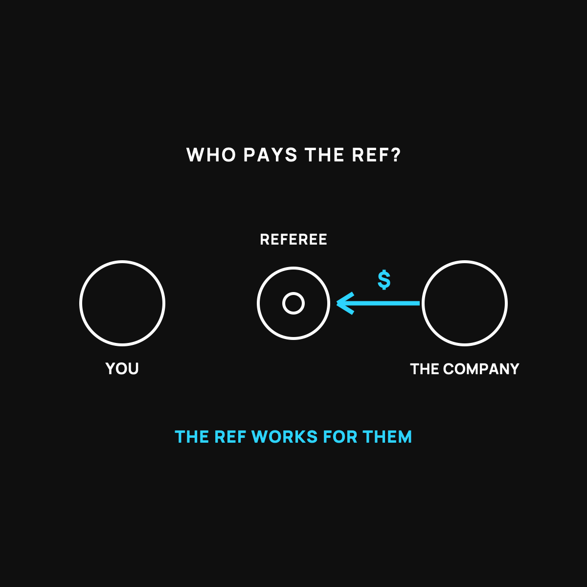

Health Insurance's Built-In Conflict of Interest
The referee gets paid by one of the teams. Here's what that costs you.
Your health insurance company makes more money when it pays out less. The company deciding whether to pay your claim is the same company that keeps the money if it doesn't. That's a built-in conflict of interest, like a referee paid by one team. Nobody has to be evil for it to tilt against you.

Here's a thing that took me too long to understand. Your health insurance company makes more money when it pays out less. That's not a scandal. It's just how the business is built. And once you see it, a lot of frustrating experiences start to make sense.
The referee paid by one team
Imagine a big game with a referee on the field. Now imagine one of the teams signs the referee's paycheck. The ref might be a good, honest person. But every close call now has a thumb on the scale, because when in doubt, the ref knows who pays him.
Health insurance has a version of this built in. When you file a claim, the company deciding whether to pay it is the same company that keeps the money if it doesn't. They're the referee, and they're also one of the teams. That's a conflict of interest, plain and simple.
Why this isn't a conspiracy
I want to be fair here, because this brand doesn't do scare tactics. Most people who work at these companies are decent folks doing their jobs. There's no villain twirling a mustache.
The problem isn't bad people. It's a bad setup. When a company earns more by paying you less, you don't need anybody to be evil for the results to tilt against you. The incentive does the work quietly. That's the same idea behind the whole system I laid out in the cornerstone piece, Nobody Gets Paid to Make You Well.
How it shows up in your life
You've probably felt it already. The claim denied on a technicality. The "this wasn't pre-approved." The bill that bounces back three times before it's paid. The hours on hold. None of that is an accident. A dollar they don't pay out is a dollar they keep. So the process is built to be slow and full of doors, because every door is a chance for the claim to fall through.
Is there another way to do it?
This is exactly why some people go looking for a different setup, one where the folks handling the money don't profit by keeping yours. Health sharing is one of those. Instead of a company that wins when it pays less, it's a large group of members who pool their money to cover each other's big bills. The group has no reason to deny you, because it isn't pocketing the leftover as profit. I gave the honest, plain-English breakdown of how that works.
One health-sharing community I've looked into is CrowdHealth, which charges a flat monthly fee instead of profiting from denied claims. If you want to see how their model works, you can check out CrowdHealth (opens in a new tab).
Honest disclosure: that's a referral link. If you join through it, Normaltown USA may earn a small referral bonus, at no extra cost to you. I only mention CrowdHealth because it's a genuine answer to the conflict this article is about, not because of the link. It's not insurance, and it isn't right for everyone.
The takeaway
Health insurance has a referee who's paid by one of the teams. Nobody has to be evil for that to work against you. It's just a setup where the company earns more by paying you less. Knowing that won't fix your next claim, but it does explain the runaround, and it's worth knowing there are other ways to handle a big medical bill.
Questions I get about this
Why do insurance companies deny claims?
Because a dollar they don't pay out is a dollar they keep. So the process is built to be slow and full of doors: pre-approvals, technicalities, bills that bounce back three times. Every door is a chance for the claim to fall through. It's the setup, not the people.
Is there a health setup without this conflict?
Health sharing is one. The community pools money to cover each other's big bills and has no leftover to keep as profit, so it has no reason to fight your bill. My family uses CrowdHealth, which charges a flat $60 a month per person. It's not insurance, though, and it isn't right for everyone. Start with What Is Health Sharing?.
Does knowing this help me with my next claim?
It explains the runaround, which lowers the blood pressure. Practically: get pre-approvals in writing, ask for the itemized bill, appeal denials, and ask for the cash price when you're under your deductible. And know that other ways to handle a big bill exist.

Written by David Dewese
Normal guy with a full-time job, wife, and kids. Spent twenty years pursuing music and creative ventures before starting a family. Sharing tips and tricks on how to thrive while living on an artist's income. Not a financial advisor. More about me.
New here?
Normaltown USA is plain-English money and healthcare help for normal people, written by a regular guy with a family of four. No jargon, no hype. Start here, or read the FAQ.